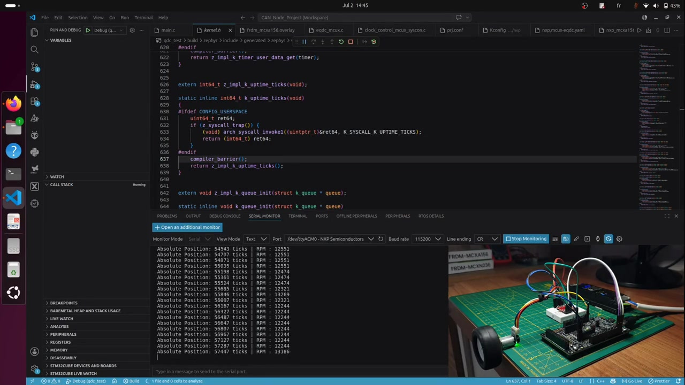

✓ UPSTREAM MERGED · HOVER TO PREVIEW

▶ Watch FRDM-MCXA156 Demo
Co-developed a Zephyr Sensor API driver wrapper with an NXP Semiconductors engineer binding MCUXpresso HAL + INPUTMUX for the Enhanced Quadrature Decoder (eQDC) peripheral across FRDM-MCXA153/156/266/344/346/366 silicon. Verified live on physical FRDM-MCXA156 hardware.